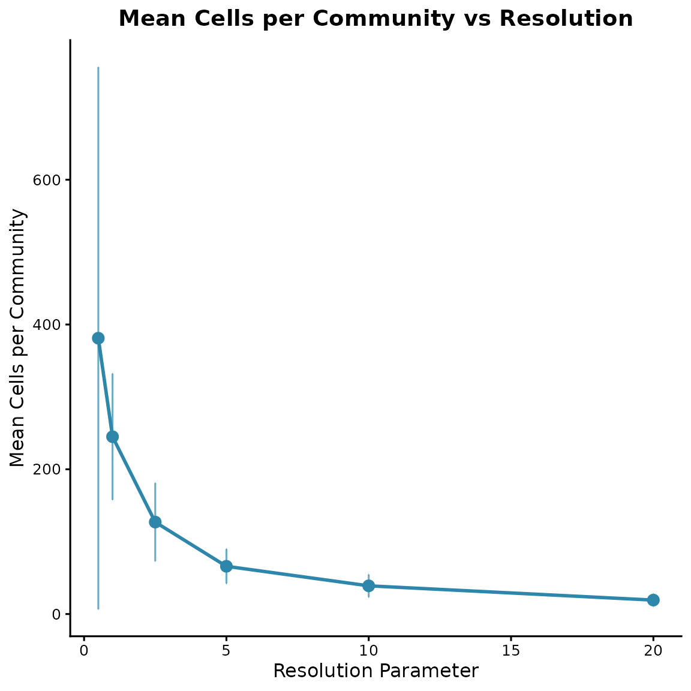
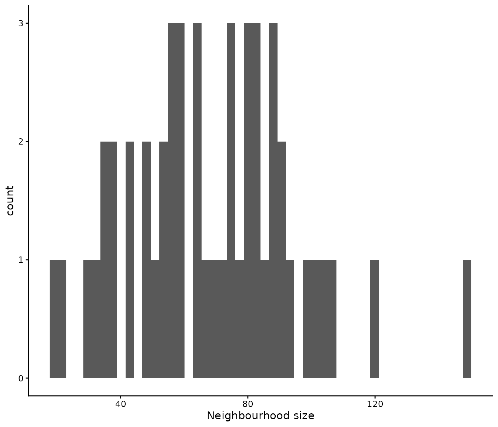
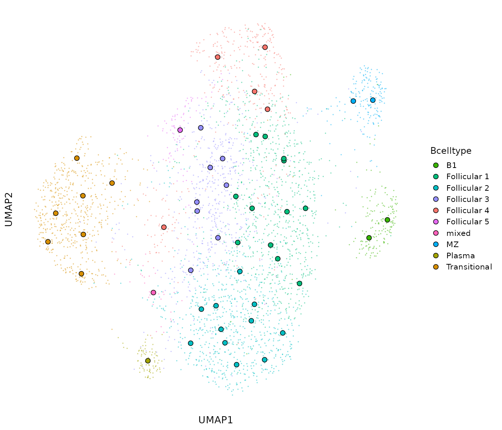
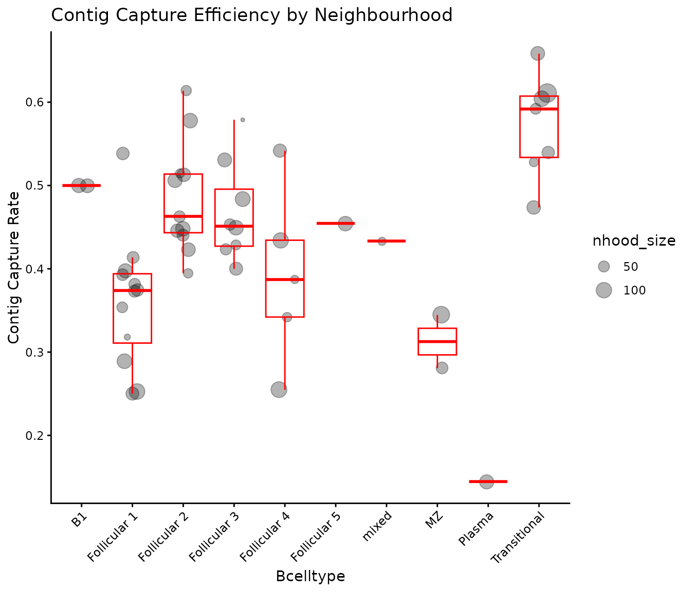
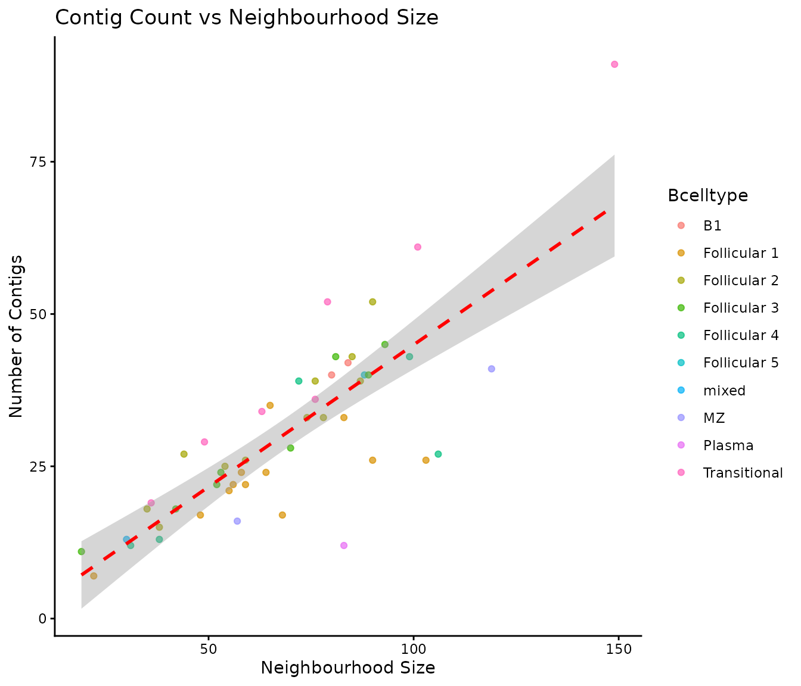
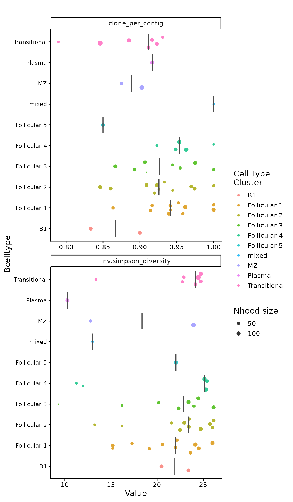
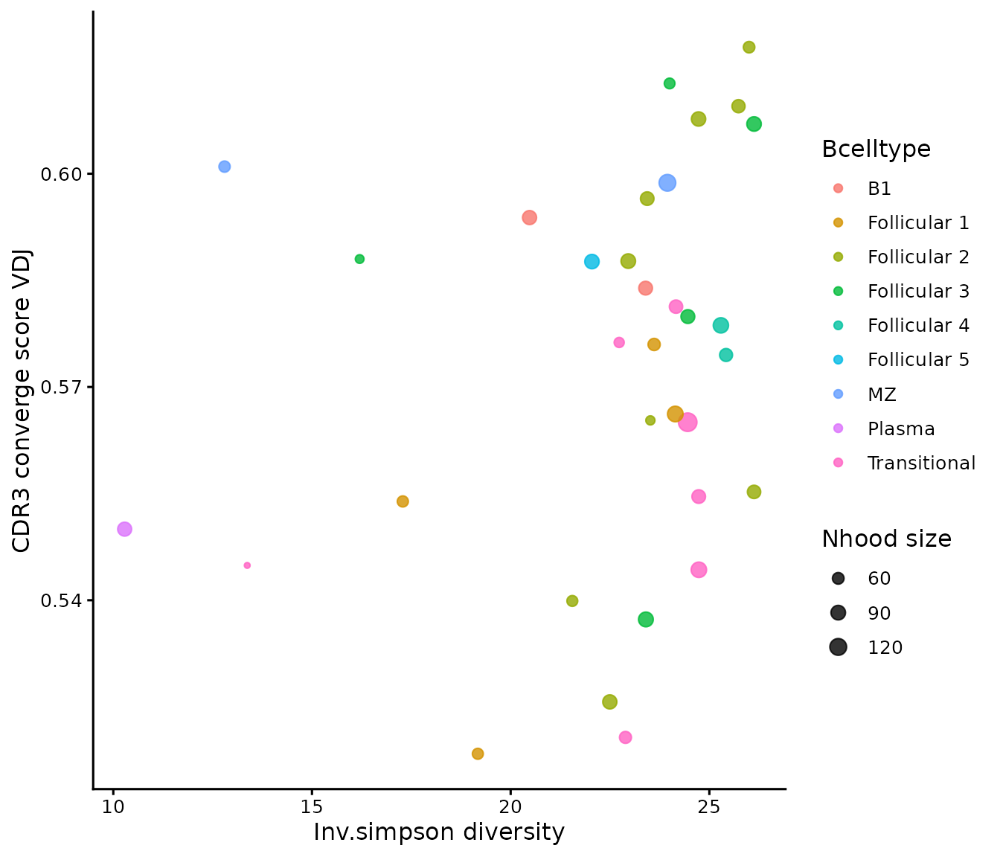

Load data
TEVRA accepts a SingleCellExperiment object. Communities
of transcriptionally similar cells can be computed upstream of the TEVRA
workflow using any preferred method e.g., miloR,
metacell or supercell. If discrete communities have
been defined, these should be stored as a column in
colData(sce_object). If overlapping neighbourhoods were
computed e.g., via miloR, these should be stored as a binary
nhoods matrix.
data(tevra_example)
tevra_example
#> class: SingleCellExperiment
#> dim: 2000 3430
#> metadata(1): graphs
#> assays(1): logcounts
#> rownames(2000): Pcmtd1 Sgk3 ... CAAA01147332.1 AC149090.1
#> rowData names(0):
#> colnames(3430): AAACCTGAGTTACCCA-1 AAACCTGCAATGTTGC-1 ...
#> TTTGTCATCACCGTAA-1 TTTGTCATCGCTAGCG-1
#> colData names(18): orig.ident nCount_RNA ... CTaa_BCR_IGH CTaa_BCR_IGL
#> reducedDimNames(2): PCA UMAP
#> mainExpName: RNA
#> altExpNames(0):Create communities
TEVRA also provides create_communities(), a custom
function for community detection. This operates via Leiden partitioning
of a pre-computed shared-nearest-neighbour graph. The key parameters
are:
-
resolution: determines the granularity of clustering -
min_cells: informs the minimum number of cells per community. Cells belonging to communities with fewer cells are reassigned to the community occupied by the majority of the cell’s nearest neighbours
To establish communities of the desired size, different resolutions
can be evaluated via test_resolution() and visualised via
plot_resolution_results()
res_results <- test_resolution(tevra_example,
graph.name = "RNA_snn",
resolutions = c(0.5,1,2.5,5,10,20),
min_cells = 5)
#> Testing resolutions...
#> Resolution: 0.5
#> Resolution: 1
#> Resolution: 2.5
#> Resolution: 5
#> Resolution: 10
#> Resolution: 20
#>
#> Resolution testing complete!
head(res_results)
#> resolution n_communities mean_cells_per_community sd_cells_per_community
#> 1 0.5 9 381.11111 374.370954
#> 2 1.0 14 245.00000 87.088814
#> 3 2.5 27 127.03704 53.868416
#> 4 5.0 52 65.96154 23.790723
#> 5 10.0 88 38.97727 15.577007
#> 6 20.0 178 19.26966 8.606612
#> median_cells_per_community min_cells_per_community max_cells_per_community
#> 1 168.0 83 1081
#> 2 237.0 83 370
#> 3 134.0 27 244
#> 4 66.5 22 124
#> 5 37.0 9 82
#> 6 18.0 5 47
#> modularity
#> 1 0.7002931
#> 2 0.7295705
#> 3 0.7035432
#> 4 0.6404798
#> 5 0.5851922
#> 6 0.4821389
plot_resolution_results(res_results,
show_error_bars = TRUE)
Once the optimal resolution has been selected, communities can be
generated via create_communities() and community sizes
evaluated via plot_nhood_sizes()
communities <- create_communities(tevra_example,
graph.name = "RNA_snn",
resolution = 5,
min_cells = 5,
feature.col = "nFeature_RNA",
count.col = "nCount_RNA")
#> [1] "Created 50 communities"
#> [1] "Mean cells per community: 68.6"
communities
#> $sce
#> class: SingleCellExperiment
#> dim: 2000 3430
#> metadata(1): graphs
#> assays(1): logcounts
#> rownames(2000): Pcmtd1 Sgk3 ... CAAA01147332.1 AC149090.1
#> rowData names(0):
#> colnames(3430): AAACCTGAGTTACCCA-1 AAACCTGCAATGTTGC-1 ...
#> TTTGTCATCACCGTAA-1 TTTGTCATCGCTAGCG-1
#> colData names(19): orig.ident nCount_RNA ... CTaa_BCR_IGL community_id
#> reducedDimNames(2): PCA UMAP
#> mainExpName: RNA
#> altExpNames(0):
#>
#> $communities_summary
#> # A tibble: 50 × 4
#> community_id n_cells mean_detected mean_total_counts
#> <dbl> <int> <dbl> <dbl>
#> 1 1 99 1989. 4771.
#> 2 2 49 1989. 4218.
#> 3 3 83 1366. 2199.
#> 4 4 84 2003. 4965.
#> 5 5 80 2139. 5694.
#> 6 6 58 1881. 4352.
#> 7 7 90 2056. 4813.
#> 8 8 74 1813. 4176.
#> 9 9 72 2072. 4912.
#> 10 10 54 1935. 4383.
#> # ℹ 40 more rows
sce_obj <- communities$sce
plot_nhood_sizes(communities$communities_summary)
A neighbourhood-level UMAP can be generated via aggregating (mean or median) the consistuent cells’ individual UMAP coordinates per neighbourhood
sce_obj <- nhood_umap(sce_obj,
nhood_col = "community_id",
aggregate_fun = "median",
result_name = "nhood_umap")
#> Neighbourhood UMAP centroids (median) for 50 neighbourhoods stored in metadata(object)[['nhood_umap']].
head(metadata(sce_obj)$nhood_umap)
#> nhood nhood_size median_UMAP_1 median_UMAP_2
#> 1 1 99 -0.1635164 3.39397471
#> 2 2 49 -6.7208307 -0.48542459
#> 3 3 83 -2.8592288 -2.98583253
#> 4 4 84 5.6871135 -0.40307231
#> 5 5 80 6.3954184 -0.02601494
#> 6 6 58 2.3985686 1.21709789Neighbourhood level analysis
Once cells are aggregated into transcriptionally-defined neighbourhoods, these can be fed into TEVRA’s neighbourhood-level analysis functions.
Neighbourhood annotation
Each neighbourhood can be annotated according to the most common
identity among its constituent cells. Specify one or more
colData columns in annotation_cols. For each
column, the most frequent value across the neighbourhood’s cells becomes
the neighbourhood’s annotation, provided it accounts for a proportion of
cells above the defined threshold.
sce_obj <- nhood_annotation(object = sce_obj,
annotation_cols = "Bcelltype",
nhood_col = "community_id",
threshold = 0.5,
result_name = "nhood_annotation")
#> Annotation column 'Bcelltype':
#> 49 / 50 neighbourhoods assigned a dominant identity (threshold = 0.50).
#> 1 / 50 neighbourhoods labelled 'mixed' (no identity exceeded threshold = 0.50).
#> Dominant identity breakdown:
#> Follicular 1: 12 neighbourhood(s)
#> Follicular 2: 11 neighbourhood(s)
#> Follicular 3: 8 neighbourhood(s)
#> Transitional: 7 neighbourhood(s)
#> Follicular 4: 5 neighbourhood(s)
#> B1: 2 neighbourhood(s)
#> MZ: 2 neighbourhood(s)
#> Follicular 5: 1 neighbourhood(s)
#> Plasma: 1 neighbourhood(s)
#> Stored annotation results (50 neighbourhoods x 1 annotation column(s)) in metadata(object)[['nhood_annotation']].
head(metadata(sce_obj)$nhood_annotation)
#> nhood nhood_size Bcelltype Bcelltype_dominant_prop
#> 1 1 99 Follicular 4 0.9191919
#> 2 2 49 Transitional 1.0000000
#> 3 3 83 Plasma 1.0000000
#> 4 4 84 B1 0.9761905
#> 5 5 80 B1 0.9750000
#> 6 6 58 Follicular 1 0.7068966To investigatethe proportion of cells per neighbourhood with each
identity without assigning a neighbourhood annotation, run
nhood_annotation_props()
Neighbourhood diversity
The clonal repertoire of each neighbourhood is summarised using
nhood_diversity(), selecting the specific diversity metrics
desired from:
-
shannon: norm.entropyinv.simpsongini.simpsonchao1aceginistandardised_n_clones
If clones have not been defined, the raw cdr3 sequence is used as a
surrogate, although this is not recommended for B cells due to the
potential for significant sequence modification within clones via
somatic hypermutation. Metrics are not computed for neighbourhoods with
less than min_n_contigs as diversity estimates are unstable
at low sample sizes. Rarefaction or coverage- based standardisation is
recommended due to the sensitivity of diversity estimates to sampling
depth
sce_obj <- nhood_diversity(sce_obj,
nhood_col = "community_id",
clone_id_col = "CTstrict_BCR",
cdr3_col = "CTnt_BCR",
min_n_contigs = 10,
metrics = c("shannon", "inv.simpson", "gini.simpson", "chao1"),
downsample_method = "rarefaction",
n_boots = 100,
feature_scale = FALSE,
result_name = "nhood_diversity")
#> Warning in nhood_diversity(sce_obj, nhood_col = "community_id", clone_id_col =
#> "CTstrict_BCR", : Rarefaction is not compatible with chao1 or ace estimators.
#> These metrics will be computed on observed counts without rarefaction.
#> _diversity_sd will be NA for these metrics.
#> Contig summary:
#> Cells with contig: 1515 / 3430
#> Neighbourhoods with >= 10 cells with contig: 49 / 50
#> Rarefaction depth: 27
#> Neighbourhoods successfully rarefied (n_contigs > rarefaction depth): 24 / 49
#> Stored diversity results (50 neighbourhoods x 4 metrics) in metadata(object)[['nhood_diversity']].
head(metadata(sce_obj)$nhood_diversity)
#> nhood nhood_size n_contigs contig_capture_rate n_clones clone_per_contig
#> 1 1 99 43 0.4343434 41 0.9534884
#> 2 10 54 25 0.4629630 23 0.9200000
#> 3 11 68 17 0.2500000 16 0.9411765
#> 4 12 90 26 0.2888889 26 1.0000000
#> 5 13 119 41 0.3445378 37 0.9024390
#> 6 14 87 39 0.4482759 36 0.9230769
#> coverage diversity_reliable shannon_diversity shannon_diversity_sd
#> 1 0.09302326 TRUE 3.254248 0.03476596
#> 2 0.16000000 TRUE 3.107972 NA
#> 3 0.11764706 TRUE 2.751667 NA
#> 4 0.00000000 TRUE 3.258097 NA
#> 5 0.19512195 TRUE 3.208038 0.04911501
#> 6 0.15384615 TRUE 3.221388 0.04401398
#> inv.simpson_diversity inv.simpson_diversity_sd gini.simpson_diversity
#> 1 25.29050 1.110711 0.9605761
#> 2 21.55172 NA 0.9536000
#> 3 15.21053 NA 0.9342561
#> 4 26.00000 NA 0.9615385
#> 5 23.94501 1.595969 0.9577503
#> 6 24.72817 1.296804 0.9587929
#> gini.simpson_diversity_sd chao1_diversity chao1_diversity_sd
#> 1 0.001975085 288.0 NA
#> 2 NA 93.0 NA
#> 3 NA 68.5 NA
#> 4 NA 26.0 NA
#> 5 0.002571843 142.6 NA
#> 6 0.002152818 168.0 NANeighbourhood cdr3 convergence
The similarity of the CDR3 amino acid sequences of different clones
is computed using nhood_cdr3_convergence(). This is
computed for both heavy and light chain CDR3 sequences when
chain = “both”.
Pairwise distances are computed via pwalign’s
stringDist() function across all unique (or representative
when receptor_type = “BCR”) CDR3 amino acid sequences per
neighbourhood exceeding min_n_contigs and optionally min_clones. These
are either traditional Levenshtein distances or calculated using
BLOSUM-weighted substitution scores. Raw alignment distances are then
normalised to [0,1] by dividing by the length of the longer sequence in
each pair. To control for variation in clone number across
neighbourhoods, distance matrices may be downsampled over
n_boots iterations.
Pairwise distances matrices are summarised per neighbourhood as a global convergence score (mean or median pairwise distance across all representative CDR3 sequences), or a local convergence score (mean distance of each CDR3 sequence to its k nearest neighbours, averaged across representatives). Finally, all distance-based metrics are converted to convergence scores via \(1 - distance\).
sce_obj <- nhood_cdr3_convergence(object = sce_obj,
nhood_col ="community_id",
receptor_type = "BCR",
chain = "both",
aa_col = c(VDJ = "CTaa_BCR_IGH", VJ = "CTaa_BCR_IGL"),
clone_id_col = "CTstrict_BCR",
min_n_contigs = 10,
min_clones = NULL,
distance_method = "levenshtein",
summary_metric = "converge_score",
downsample = TRUE,
n_boots = 100,
BPPARAM = BiocParallel::SerialParam(),
result_name = "nhood_cdr3_convergence")
#> Extracting neighbourhood membership...
#> Filtering to cells with complete contig annotation...
#> Pre-pass: counting clones per neighbourhood...
#> VDJ: 33 / 50 neighbourhoods will be processed (downsampling depth = 16 representatives) | 17 skipped (< 10 cells with contig annotation)
#> VJ: 49 / 50 neighbourhoods will be processed (downsampling depth = 26 representatives) | 1 skipped (< 10 cells with contig annotation)
#> Computing CDR3 distances for 49 valid neighbourhoods (of 50 total)...
#> Processing neighbourhood 5 / 50 (10%)...
#> Processing neighbourhood 10 / 50 (20%)...
#> Processing neighbourhood 15 / 50 (30%)...
#> Processing neighbourhood 20 / 50 (40%)...
#> Processing neighbourhood 25 / 50 (50%)...
#> Processing neighbourhood 30 / 50 (60%)...
#> Processing neighbourhood 35 / 50 (70%)...
#> Processing neighbourhood 40 / 50 (80%)...
#> Processing neighbourhood 45 / 50 (90%)...
#> Processing neighbourhood 50 / 50 (100%)...
#> Collating results...
#>
#> CDR3 convergence score computation complete.
#> Receptor type : BCR
#> Distance method: levenshtein
#> Chain(s) : VDJ, VJ
#> Summary metric(s): converge_score
#> VDJ: 33 / 50 neighbourhoods with reliable convergence estimates (0 with NA converge_score due to n_clones <= k)
#> VJ: 49 / 50 neighbourhoods with reliable convergence estimates (0 with NA converge_score due to n_clones <= k)
#> Stored CDR3 convergence results (50 neighbourhoods x 14 columns) in metadata(object)[['nhood_cdr3_convergence']].
head(metadata(sce_obj)$nhood_cdr3_convergence)
#> nhood nhood_size VDJ_n_contigs VDJ_contig_capture_rate VDJ_n_clones
#> 1 1 99 24 0.2424242 23
#> 2 2 49 24 0.4897959 23
#> 3 3 83 11 0.1325301 10
#> 4 4 84 28 0.3333333 23
#> 5 5 80 26 0.3250000 25
#> 6 6 58 9 0.1551724 8
#> VDJ_converge_score_reliable CDR3_converge_score_VDJ
#> 1 TRUE 0.578668
#> 2 TRUE 0.576261
#> 3 TRUE 0.550000
#> 4 TRUE 0.593832
#> 5 TRUE 0.583904
#> 6 FALSE NA
#> CDR3_converge_score_sd_VDJ VJ_n_contigs VJ_contig_capture_rate VJ_n_clones
#> 1 0.02072197 43 0.4343434 41
#> 2 0.01761828 29 0.5918367 27
#> 3 NA 12 0.1445783 11
#> 4 0.01817885 42 0.5000000 35
#> 5 0.01668564 40 0.5000000 36
#> 6 NA 24 0.4137931 23
#> VJ_converge_score_reliable CDR3_converge_score_VJ CDR3_converge_score_sd_VJ
#> 1 TRUE 0.691739 0.017611755
#> 2 TRUE 0.634082 0.003144673
#> 3 TRUE 0.635000 NA
#> 4 TRUE 0.647581 0.012022132
#> 5 TRUE 0.641388 0.015655762
#> 6 TRUE 0.656900 NATo investigate the raw convergence matrices without
neighbourhood-level summarisation, run
nhood_cdr3_convergence_matrices().
Merge neighbourhood-level analysis
merge_nhood_results() easily aggregates all
neighbourhood-level analyses into a single dataframe for plotting and
visualisation purposes.
sce_obj <- merge_nhood_results(object = sce_obj,
dataframe_names = c("nhood_umap", "nhood_annotation",
"nhood_diversity", "nhood_cdr3_convergence"),
merge_key = "nhood",
size_col = "nhood_size",
verbose = TRUE,
result_name = "merged_nhood_analysis")
#> ======================================================================
#> Merging Neighbourhood Analysis Results
#> ======================================================================
#> Checking available data (4 requested):
#> nhood_umap: ✓ Found
#> nhood_annotation: ✓ Found
#> nhood_diversity: ✓ Found
#> nhood_cdr3_convergence: ✓ Found
#> Input dimensions:
#> nhood_umap 50 rows × 4 columns
#> nhood_annotation 50 rows × 4 columns
#> nhood_diversity 50 rows × 16 columns
#> nhood_cdr3_convergence 50 rows × 14 columns
#> Validating neighbourhood consistency...
#> ----------------------------------------------------------------------
#> ✓ 'nhood_umap' vs 'nhood_annotation': all 50 neighbourhoods shared
#> ✓ 'nhood_umap' vs 'nhood_annotation': size column ('nhood_size') IDENTICAL across all 50 shared neighbourhoods
#> ✓ 'nhood_umap' vs 'nhood_diversity': all 50 neighbourhoods shared
#> ✓ 'nhood_umap' vs 'nhood_diversity': size column ('nhood_size') IDENTICAL across all 50 shared neighbourhoods
#> ✓ 'nhood_umap' vs 'nhood_cdr3_convergence': all 50 neighbourhoods shared
#> ✓ 'nhood_umap' vs 'nhood_cdr3_convergence': size column ('nhood_size') IDENTICAL across all 50 shared neighbourhoods
#> ----------------------------------------------------------------------
#> Performing sequential merge on 'nhood' column...
#> Step 1: 'nhood_umap' + 'nhood_annotation'
#> Checking 1 common column(s) between 'nhood_umap' and 'nhood_annotation':
#> ✓ nhood_size IDENTICAL
#> Removing 1 redundant column(s) from 'nhood_annotation': nhood_size
#> → 50 rows × 6 columns
#> Step 2: 'nhood_umap + nhood_annotation' + 'nhood_diversity'
#> Checking 1 common column(s) between 'nhood_umap + nhood_annotation' and 'nhood_diversity':
#> ✓ nhood_size IDENTICAL
#> Removing 1 redundant column(s) from 'nhood_diversity': nhood_size
#> → 50 rows × 20 columns
#> Step 3: 'nhood_umap + nhood_annotation + nhood_diversity' + 'nhood_cdr3_convergence'
#> Checking 1 common column(s) between 'nhood_umap + nhood_annotation + nhood_diversity' and 'nhood_cdr3_convergence':
#> ✓ nhood_size IDENTICAL
#> Removing 1 redundant column(s) from 'nhood_cdr3_convergence': nhood_size
#> → 50 rows × 32 columns
#> Stored merged results (50 rows × 32 columns) in metadata(object)[['merged_nhood_analysis']].Plot
TEVRA offers a number of visualisation functions. Each neighbourhood is visualised as a point.
Neighbourhood UMAP
cell_umap_coords <- as.data.frame(reducedDims(sce_obj)$UMAP)
summary(row.names(cell_umap_coords) == row.names(colData(sce_obj)))
#> Mode TRUE
#> logical 3430
cell_umap_coords$community_id <- colData(sce_obj)$community_id
plot_nhood_umap(metadata(sce_obj)$merged_nhood_analysis,
nhood_col = "nhood",
x_col = "median_UMAP_1",
y_col = "median_UMAP_2",
fill_by = "Bcelltype",
show_cells = T,
cell_umap_coords = cell_umap_coords,
cell_x_col = "umap_1",
cell_y_col = "umap_2",
cell_colour_by = "nhood",
cell_nhood_col = "community_id")
Capture efficiency
Visualises the efficiency of contig capture per neighbourhood.
Follows nhood_diversity()
plot_capture_efficiency(nhood_diversity_df = metadata(sce_obj)$merged_nhood_analysis,
group_by = "Bcelltype")
#> $capture_rate
#>
#> $count_vs_size
#> `geom_smooth()` using formula = 'y ~ x'
Beeswarm
plot_nhood_beeswarm(metadata(sce_obj)$merged_nhood_analysis,
plot_cols = c("clone_per_contig" , "inv.simpson_diversity"),
reliability_col = "diversity_reliable",
group_by = "Bcelltype",
summary_metric = "group_median",
colour_by = "Bcelltype",
size_by = "nhood_size")
#> Orientation inferred to be along y-axis; override with
#> `position_quasirandom(orientation = 'x')`
Scatter plot
plot_nhood_scatter(metadata(sce_obj)$merged_nhood_analysis,
x_col = "inv.simpson_diversity",
y_col = "CDR3_converge_score_VDJ",
x_reliability_col = "diversity_reliable",
y_reliability_col = "VDJ_converge_score_reliable",
colour_by = "Bcelltype",
size_by = "nhood_size")